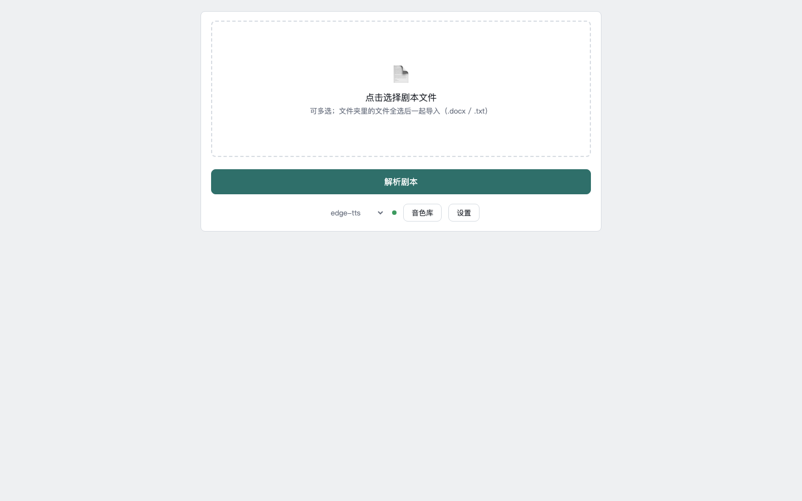
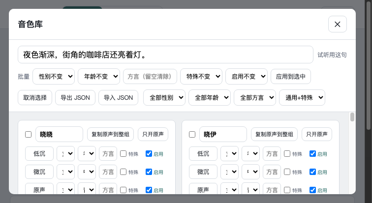

剧本围读助手把“读剧本”变成“听剧本”：上传剧本后自动拆出角色、分配音色、合成配音，并按角色朗读、随时续读。这份指南用五个章节讲清 核心功能、操作顺序与最容易踩的坑，读完即可独立完成一集围读。
传统剧本围读依赖线下凑人、凑时间、逐句分配角色，本工具把这条流水线压缩成本地四个服务。先理解整体流程，才能知道每一步设置到底影响什么。
剧本围读本是剧组最直观的排练方式，但组织成本不低：要凑齐人数、分配角色、逐句念稿，个人创作者更是很难一个人把整部戏“读”出来。本工具把这件事变成浏览器里的本地工作流，上传剧本后由程序完成大部分重复劳动。
整体流程共七步：首页进入选择页 → 上传新剧本或继续围读 → 场标预览 → 确认角色 → 声音设计或分配音色 → 流式合成 → 围读播放。每一步都有对应设置项，但默认值已经能跑通，用户可以先走一遍再逐步调细。
| 阶段 | 做什么 | 关键设置 |
|---|---|---|
| 上传 | 拖入 .docx / .txt / .md，可多选多集 | 文件名带集号，自动排序 |
| 场标预览 | 确认疑似漏识别的行 | 一键设为场标或忽略 |
| 确认角色 | 归并同义写法，预判性别年龄 | 可选 DeepSeek 精修 |
| 声音设计 | Qwen 生成种子音色；Edge 直接分配 | 试听后进入下一步 |
| 合成 | 逐句流式生成音频 | 满 25 句可提前进入 |
| 围读 | 播放、倍速、跳转 | 空格 / Esc 快捷键 |
| 续读 | 选择剧集继续围读 | 换目录等于换存档 |
下图给出完整的流程示意，七个阶段按顺序推进，存档贯穿始终。
核心功能集中在五个环节：上传解析、角色与音色、流式合成、围读播放、跨集存档。每个环节都有对应设置，理解它们能省下大量返工。上传解析与音色库是使用频率最高的两个界面，先确认场标与角色，再决定音色，以下结合界面截图逐环节说明。
上传页支持单个大文件或一次多选多集剧本，格式为 .docx / .txt / .md。解析器按行区分场标、对白、动作与旁白，并在页面上先给出场标预览，疑似漏识别的行可一键设为场标或忽略；docx 还会读取加粗与空行结构辅助识别。

角色确认页把同义写法归并（如“熊黑严肃”归为“熊黑”），用规则预判性别与年龄段，可选 DeepSeek 精修。排序规则是无音色种子的新角色在前、可复用角色在后，方便先处理需要设计的角色。
音色库提供 14 个中文基础音色、每档 5 种语调，共 70 个音色位。每个音色位可单独设置性别、年龄、方言标签，支持批量设置、试听、导出与导入 JSON，锁定后防止误改。

合成采用流式方式：按剧本顺序逐句生成，每完成一句就进入时间轴，满 25 句（或整剧不足 25 句时全部完成）即可提前进入围读，后台继续合成；失败句以空音频占位，播放时自动跳过。
围读页支持当前句高亮、自动滚动、0.5x-3x 倍速、±5s / ±10s 跳转与进度条拖动；空格播放/暂停，Esc 保存并返回，右上角开关切换深色与浅色。
存档采用两级结构：剧集之下再分集，每集独立保存剧本、音频与播放进度。跨集音色库按 roleBase 身份键合并，第二集解析到已有角色时默认复用音色，音源锁在剧级，避免同一部剧混用 edge 与 Qwen。
大部分使用问题集中在角色识别、音色统一与存档路径三处。按这组技巧操作，首集配音通常一次成型，多集项目也不会出现声音漂移。本章把高频技巧按“上传前、合成前、续读前”三个阶段排列，最后给一组排查信号。
~/Documents/剧本围读存档，第一次保存时自动创建；改目录等于换一套存档，共享存档需要手动拷贝整个文件夹。Qwen 首次生成要加载模型，等几十秒正常；服务已加入 180 秒超时与 worker 重建，卡住后重试即可，不需要反复重启电脑。排查时先看三个信号：上传页是否提示存档服务不可用、Qwen 生成是否返回超时、logs 目录下对应服务日志是否有异常。
附录整理高频术语、运行环境与常见问题，供读者在遇到报错时快速对照。环境部分只覆盖外发版默认形态。
roleBase 是角色的稳定身份键，会剥掉头衔、OS、括注与情绪后缀，保证“聂九罗 董事长”与“聂九罗”在跨集音色库里指向同一角色。
种子音色：Qwen 模式下每个角色的参考音频，之后所有台词都基于它克隆，决定全剧声音统一性。
音源锁：一部剧锁定 edge 或 Qwen 其中一种音源，跨集复用不会混用两种声音。
流式合成：按剧本顺序逐句生成音频，每完成一句就进入时间轴，不必等全部完成。
两级存档 指“剧 → 集”的目录结构：剧集下有 project.json、音色目录与各集音频，每集独立保存 meta.json 与播放进度。
外发版运行环境：Apple Silicon Mac、Python 3.11、约 7GB 磁盘空间。四个本地服务分别占用 5174 / 9882 / 9883 / 9884 端口，前端使用 dist 静态产物，不需要安装 Node。
| 端口 | 服务 | 依赖 |
|---|---|---|
| 5174 | 前端静态服务 | dist 构建产物 |
| 9882 | edge-tts | 联网 |
| 9883 | Qwen3 | 本地模型 |
| 9884 | 存档服务 | Python 标准库 |
.venv-qwen/bin/python 启动，重新运行 setup.command 即可。~/Documents/剧本围读存档，第一次保存时创建；改目录等于换一套存档。